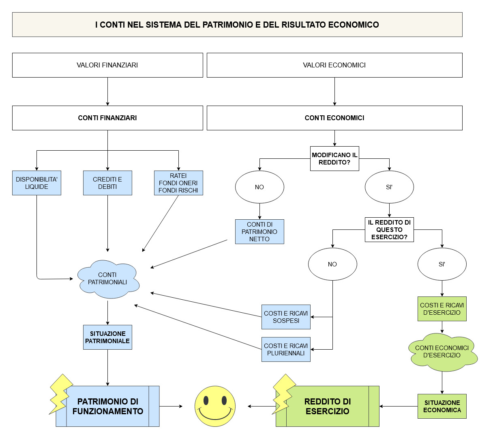

Prima di cominciare!
Prima di cominciare vai a ripassare i seguenti argomenti:
- Situazione patrimoniale e situazione economica
- Reddito di esercizio e patrimonio di funzionamento
- Principio di competenza
Prima di cominciare vai a ripassare i seguenti argomenti:

E' importante saper riconoscere il tipo di conto che si utilizza durante le scritture in partita doppia.
I tipi di conti sono così riepilogati:
|
CONTI FINANZIARI |
CONTI ECONOMICI |
|
• Conti finanziari accesi alle disponibilità liquide • Conti finanziari accesi ai crediti • Conti finanziari accesi ai debiti • Conti finanziari accesi ai ratei • Conti finanziari accesi ai fondi oneri o fondi rischi |
• Conti economici di patrimonio netto • Conti economici di reddito accesi ai costi o ai ricavi d’esercizio (e alle loro rettifiche) • Conti economici di reddito accesi ai costi o ai ricavi pluriennali • Conti economici di reddito accesi ai costi o ricavi sospesi. |
Utilizza il seguente test per metterti alla prova sui vari tipi di conti.
Chiediti sempre:
https://quizlet.com/_97vd9n?x=1jqt&i=35rq24
.
Questo articolo è sotto la licenza Licenza Creative Commons Attribution Share Alike 4.0